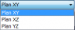
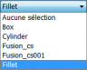
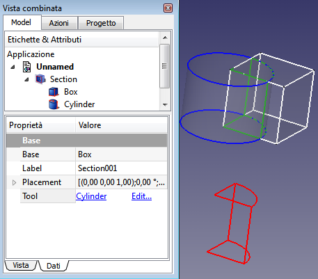

Manuel
de
FreeCAD

Ce manuel traite des outils Part.
Primitives et Modification des objets
Cette page est spécialement destinée à l'impression, comme un gros document, donc, si vous lisez ceci en ligne, vous pourrez préférer aller directement à la version Aide en ligne, qui est plus facile à parcourir.
Primitives
Description
La commande Boîte de l'atelier Pièce insère un parallélépipède droit paramétrique dans le document actif. Par défaut, la commande insère un cube de 10 x 10 x 10 mm positionné à l'origine, avec l'étiquette « Cube ». Ces paramètres peuvent être édités une fois que l'objet a été ajouté.
Utilisation
- Cliquer sur l'icône
 Cube dans l'atelier Pièce (Part).
Cube dans l'atelier Pièce (Part). - Vous pouvez également sélectionner Pièce → Primitives → Cube depuis la barre de menu.
Options
- Via l'Éditeur de propriétés :
- Length: Définit la longueur de votre objet (par défaut 10 mm).
- Width: Définit la largeur de votre objet (par défaut 10 mm).
- Height: Définit la hauteur de votre objet (par défaut 10 mm).
- Placement: Spécifie l'orientation et la position du cube dans l'espace 3D. Voir le Positionnement. Le point de référence est localisé sur le coin inférieur avant du cube.
- Label: L'étiquette est le nom donné à l'opération. Ce nom peut être changé selon votre convenance.
Properties
Base
- DATAPlacement: Specifies the orientation and position of the Box in the 3D space. See Placement. The reference point is the left front lower corner of the box.
- DATALabel: Label given to the Box object. Change to suit your needs.
Box
- DATALength: The length parameter is the Box's dimension in the x-direction.
- DATAWidth: The width parameter is the Box's dimension in the y-direction.
- DATAHeight: The height parameter is the Box's dimension in the z-direction.

Scripting
The Box command can by used in macros and from the python console using the following function:
FreeCAD.ActiveDocument.addObject("Part::Box", "myBox")
- Where "myBox" is the label for the Box object.
- Returns newly created object of type Box.
You can access and modify attributes of the Box object. For example, you may wish to modify the length, width and height parameters.
FreeCAD.ActiveDocument.myBox.Length = 25 FreeCAD.ActiveDocument.myBox.Width = 15 FreeCAD.ActiveDocument.myBox.Height = 30
You can change its placement with:
FreeCAD.ActiveDocument.myBox.Placement = FreeCAD.Placement(FreeCAD.Vector(4, 6, 3), FreeCAD.Rotation(30, 45, 10))
FreeCAD - Version
Beginning in FreeCAD version 0.14, a Part Box is referred to in the GUI elements as a Cube and the default label is "Cube".
|
| Emplacement du menu |
|---|
| Paramétrique → Cône |
| Ateliers |
| Atelier Pièce, Complet |
| Raccourci par défaut |
| Aucun |
| Voir aussi |
| Part CreatePrimitives |
Description
Un cône paramétrique tronqué est une primitive disponible sur la barre d'outils Part, ou dans le menu (primitives sub-menu) une boite de dialogue primitives géométriques est ouverte.
Utilisation
Dans l'atelier part, cliquez sur l'icône cône  .
.
Les valeurs par défaut créent un cône tronqué, défini par les paramètres rayon 1, rayon 2 hauteur et angle. par défaut le cône nouvellement créé est positionné aux coordonnées d'origine (0,0,0). Le paramètre angle permet de créer une portion de cône (par défaut, 360°) et les rayons 1 et 2 correspondent à la base et à la hauteur du cône tronqué.
Options

|
Cone
|
L'image ci-dessous montre un cône avec le paramètre "Angle" réglé sur 270 degrés et les autres paramètres ont leurs valeurs par défaut.

|
| Emplacement du menu |
|---|
| Paramétrique → Cylindre |
| Ateliers |
| Atelier Pièce, Complet |
| Raccourci par défaut |
| Aucun |
| Voir aussi |
| Part CreatePrimitives |
Description
Crée un simple cylindre paramétrique, avec sa position, son angle de remplissage, son rayon et sa hauteur.
Utilisation
Dans l'atelier Part cliquez sur l'icône du cylindre  . Par défaut le cylindre est plein et à sa position d'origine 0,0,0 et avec un rayon de 2.0mm et une hauteur de 10.0mm.
. Par défaut le cylindre est plein et à sa position d'origine 0,0,0 et avec un rayon de 2.0mm et une hauteur de 10.0mm.
Options
Les propriétés peuvent être éditées dans "Vue combinées > Propriétés onglet Données :
Cylindre
- Angle: Le paramètre angle permet de créer une portion du cylindre (l'angle par défaut est de 360°).
- Height: La valeur Height est la hauteur dans l'axe Z.
- Radius: Le rayon est défini dans le plan X-Y.
|
| Emplacement du menu |
|---|
| Part → Sphère |
| Ateliers |
| Part, Complet |
| Raccourci par défaut |
| Aucun |
| Voir aussi |
| Créer des Primitives |
Description
Crée une simple Sphère paramétrique, avec des paramètres de position, de rayon, et d'angles (angle1, angle2 et angle3).La Sphère, sera positionnée, à sa création au point d'origine (0,0,0).
Les paramètres angulaires permettent de tronquer et de créer une révolution incomplète (portion de sphère) au lieu d'une Sphère complète. Par défaut, ils sont définis à -90°, 90°, 360°, et, 5 mm de rayon.

Utilisation
Dans l'atelier Part cliquez sur l'icône  . A sa création la sphère est positionnées aux coordonnées d'origine 0,0,0. Les paramètres d'angles permettent de construire une portion de sphère ou une sphère complète (la valeur par défaut est 360°).
. A sa création la sphère est positionnées aux coordonnées d'origine 0,0,0. Les paramètres d'angles permettent de construire une portion de sphère ou une sphère complète (la valeur par défaut est 360°).
Options
The parametric sphere is defined by the following parameters:
- Rayon
- Angle 1
- Angle 2
- Angle 3
- ainsi que l'ensemble standard de paramètres de placement
L'image ci-dessous donne un aperçu d'une sphère paramétrique avec des paramètres différents de la valeur par défaut.

Paramètres
- Rayon: Rayon de la sphère
- Angle 1: angle défini entre l'axe des y (flèche verte) et une ligne imaginaire de rotation autour de l'axe des x (flèche rouge). Une extrémité de la ligne est fixée à l'origine. L'autre extrémité de la ligne peut tourner comme il est dit autour de l'axe x et de rester dans le plan XY. La ligne a la longueur du rayon de la sphère.
- Angle 2: test
Because it is quite difficult to explain the meaning of the parameters angle 1, angle 2, angle 3, the picture below gives an explanation about these parameters with following values: angle 1 = -45°, angle 2 = 45° and angle 3= 90°.
|
| Emplacement du menu |
|---|
| Pièce → Tore |
| Ateliers |
| Atelier Pièce, Complet |
| Raccourci par défaut |
| Aucun |
| Voir aussi |
| Création de Primitives |
Description
Crée un simple Tore paramétrique, avec des paramètres de position, de rayons (rayon1, rayon2), et, d'angles, (angle1,angle2 et angle3). Le centre du Tore, sera positionné, à sa création au point d'origine, (0,0,0).
Le paramètre d'Angle3 permet de créer une révolution incomplète (portion de Tore), au lieu d'un Tore complet.

How to use
In the Part workbench click on the torus icon  . The torus will be positioned at origin (point 0,0,0) on creation.
The angle parameters (angle1, angle2, angle3), as well as the radius parameter (radius1 , radius2) parameters permit to parametrize the torus, see next paragraph.
. The torus will be positioned at origin (point 0,0,0) on creation.
The angle parameters (angle1, angle2, angle3), as well as the radius parameter (radius1 , radius2) parameters permit to parametrize the torus, see next paragraph.
Option
Parameter
A torus can be assimilated to a small disc that makes a circular orbit around an imaginary axe. Thus the parametric torus is defined by the following parameters:
- Radius1: Radius of the circle around which the disc circulate
- Radius2: Radius of the disc defining the form of the torus
- Angle1: 1st angle to cut / define the disc of the torus
- Angle2: 2nd angle to cut / define the disc of the torus
- Angle3: 3rd angle to define the circumference of the torus.
as well as the standard set of placement parameters. The pictures below give a visual overview of the parameters antecedently mentioned:
 The parameter Radius1 has a value of 20 mm.
The parameter Radius1 has a value of 20 mm.
 The parameter Radius2 has a value of 2 mm.
The parameter Radius2 has a value of 2 mm.
 The parameter Angle1 has a value of -90°. Notice that, the "angle measure" tool cannot display negative angle. Considered the displayed value in picture as "-90°".
The parameter Angle1 has a value of -90°. Notice that, the "angle measure" tool cannot display negative angle. Considered the displayed value in picture as "-90°".
 The parameter Angle2 has a value of 90°.
The parameter Angle2 has a value of 90°.
 The parameter Angle3 has a value of 90°.
The parameter Angle3 has a value of 90°.
Modifier les objets
|
| Emplacement du menu |
|---|
| Pièce → Extrusion... |
| Ateliers |
| Atelier Pièce, Complet |
| Raccourci par défaut |
| Aucun |
| Voir aussi |
| Révolution |

Description
L'outil Extrusion prolonge une forme dans une distance et une direction spécifiées. Le type de la forme résultante pourra varier selon le type de la forme initiale et des options sélectionnées.
Dans les scénarios les plus courants, la liste suivante détaille les formes résultantes attendues depuis une forme initiale donnée :
- Extrusion d'un vertex (point) produit une arête linéaire (ligne)
- Extrusion d'une arête ouverte (ligne, arc) produit une face ouverte (par ex. plan)
- Extrusion d'une arête fermée (cercle) produit une face fermée (par ex. un cylindre aux extrémités ouvertes) ou si le paramètre "solid" est réglé à "true" produit un solide (par ex. un cylindre solide)
- Extrusion d'une face (ex. un plan) produit un solide (par ex. un cube)
- Extrusion d'un objet Forme du Texte produit un composé de solides (la chaîne de texte est un composé de lettres et chacune d'elle forme un solide)
Utilisation
- Sélectionner une ou des formes dans la vue 3D ou dans l'arborescence Modèle.
- Cliquer sur l'icône
 Extrusion dans la barre d'outils, ou aller dans le menu Pièce → Extrusion
Extrusion dans la barre d'outils, ou aller dans le menu Pièce → Extrusion - Définir la direction et la longueur, et optionnelement d'autres paramètres (voir la section suivante Paramètres pour plus de détails).
- Cliquer sur OK.
La sélection peut également être faite après le lancement de l'outil, en sélectionnant une ou plusieurs formes dans la liste sous le panneau Tâches.
L'arborescence Modèle listera autant d'objets « Extrude » que de formes originales sélectionnées. Chaque forme initiale est placée sous son objet « Extrude » correspondant.
Paramètres
La forme « Extrude » est définie par les paramètres suivants, qui peuvent être édités après sa création sous l'onglet Données.
- Base: la forme initiale (la forme à partir de laquelle l'extrusion est basée)
- Dir: la direction et la distance de prolongement de la forme, avec la distance définie par les axes X, Y et Z.
- Solid ("true" ou "false"): bascule entre une surface ou un solide, si n'est pas déjà défini par la nature de la forme initiale
- Taper Angle: applique un angle de dépouille à l'extrusion, avec l'extrémité de l'extrusion plus petite ou plus grande que la forme originale, tout dépendant si l'angle a une valeur positive ou négative.
- Placement: les paramètres de positionnement standards.
- Label: étiquette, ou description affichée dans l'arborescence Modèle (non disponible lors de la création de l'extrusion)
- Base: the input shape (the shape upon which the Part Extrude was applied)
- Dir: the direction to extend the shape. If Dir Mode is 'Custom', you can edit Dir. Otherwise, Dir is read-only, and computed from the linked shape.
- Dir Link: parametric link to a edge (line) that sets the direction of extrusion. As of v0.17, this property is not supported by property editor.
- Dir Mode: sets how Dir is controlled. 'Custom' meand Dir is editable. 'Edge' means Dir is obtained from an edge (line) linked by Dir Link. 'Normal' means Dir is perpendicular to plane of the input shape.
- Length Fwd: The distance to extrude by. If both Length Fwd and Length Rev are zero, the length of Dir vector is used.
- Length Rev: Additional length to extrude against Dir.
- Solid: if True, extruding a closed edge or a closed wire will yield a solid. If False, a shell will result.
- Reversed: reverses the extrusion to go against Dir.
- Symmetric: if True, extrusion is centered at the input shape, and total length is Length Fwd. Length Rev is ignored.
- Taper Angle and Taper Angle Rev: applies an angle to the extrusion, so that sides of the extrusion are drafted by the specified angle. Positive angle means the cross-section expands. Taper Angle Rev sets the taper for the reversed part of the extrusion (the part from Length Rev). As of v0.17, tapered extrusion is only supported for wires with no holes.
- Face Maker Class: sets C++ class name of face making code, which is used when making solids from wires. This property is here mainly for maintaining backward compatibility. Do not touch, unless you know what you are doing.
- Placement: the standard placement parameters
- Label: label to be shown in the Model tree (not available on Extrude creation)
Task dialog

- OK: creates the extrusion, and closes the dialog.
- Close: closes dialog, without doing anything.
- Apply: creates the extrusion, but does not close the dialog. You can then select another shape in the list on the bottom, and create more extrusions. Clicking Apply may times creates many extrusions.
- 'Direction' radio buttons: set the way extrusion direction is computed.
- 'Select' button: click it, and then pick an edge in 3D view. That edge will appear in text field next to the button, in format "ObjectName:EdgeN". You can also type the link manually. Values X,Y,Z will be filled according to the edge direction.
- X, Y, Z buttons: click X button to set extrusion direction to +X axis. Click it again to set -X axis.
- X,Y,Z input fields: set or display the direction vector of extrusion. If both lengths are zero, the length of this vector sets the length of extrusion, and values are always in mm, regardless of unit preferences.
- Length fields: set length of extrusion. These input fields have unit support.
- Symmetric: spreads out the extrusion into both directions, so that the profile remains in the middle.
- Taper Outward Angle: positive angle means profile is expanded at other end of extrusion.
- Create Solid checkbox: if checked, extruding a closed wire or edge will yield a solid. It is checked by default, if a closed wire was preselected before invoking Part Extrude.
- Shape list: here you select, what shapes to extrude. If multiple objects are selected, multiple Extrude objects are created.
Gotchas
Part Extrude dialog does not offer a preview, yet. 'Apply' will create an extrusion object every time you click it, which can be useful as preview; however, they will remain and yet another one will be created as you click OK. Undo can be useful to clean them up before clicking OK.
Since v0.17, a sketch created from within PartDesign cannot be used for Part Extrude, if it is within a Body ("Links go out of allowed scope" error). In order to Part-Extrude a sketch, you should create the sketch from Sketcher workbench. Or you can just drag a PartDesign one out of a Body.
Extrusion with taper angle does not support holes. It also may give bogus results if the number of segments in the profile changes as a result of taper.
Comparison with PartDesign Pad
PartDesign Pad is also an extrusion feature, but there are important differences.
Part Extrude always creates a standalone shape. PartDesign Pad fuses the extrusion result to the rest of the Body.
Part Extrude doesn't care where it is in model tree. PartDesign Pad can only live inside a PartDesign Body.
Part Extrude can extrude any object that has Part Geometry (OCC shape), except for solids and compsolids. And it can't extrude individual faces of other objects. PartDesign Pad will only accept a Sketch as a profile (and a small selection of other object types), or a face of a solid.
|
| Emplacement du menu |
|---|
| Pièce → Révolution |
| Ateliers |
| Atelier Pièce, Complet |
| Raccourci par défaut |
| Aucun |
| Voir aussi |
| Extrusion |
Description
- Si votre version de FreeCAD a une case à cocher pour Solide dans le dialogue de Revolutrion, vous pouvez faire des Solides à partir de filaires fermés et d'Arêtes.(Voir Notes pour les exceptions):
Crée une  Révolution de l'objet sélectionné autour d'un axe donné. La forme résultante sera un solide fermé, ou une face ouverte, selon que la forme de départ, est une face, ou un contour ouvert.
Révolution de l'objet sélectionné autour d'un axe donné. La forme résultante sera un solide fermé, ou une face ouverte, selon que la forme de départ, est une face, ou un contour ouvert.

Utilisation
Après avoir sélectionné une  esquisse, choisissez l'axe de
esquisse, choisissez l'axe de  Révolution, et, l'angle à donner à la
Révolution, et, l'angle à donner à la  révolution.
révolution.
Les types de formes suivantes sont autorisées, et, conduisent à des formes de production répertoriés :
| Input shape | Output shape |
|---|---|
| Vertex | Edge |
| Edge | Face |
| Wire | Shell |
| Face | Solid |
| Shell | Compound solid (Compsolid) |
Les solides, ou les compositions avec des solides, ne sont pas autorisés comme formes d'entrée. Les compositions normales, ne sont actuellement pas autorisées.
Les versions futures vérifieront les formes réelles, et les type d'objets composés.
Options
Vue combinée → Tâche
 Révolution
Révolution
- TÂCHES Angle : L'argument Angle, spécifie jusqu'à quel point l'objet doit être transformé. (Défaut, 360°).
- TÂCHES X : Distance de déplacement dans la direction X, de l'axe de rotation, par rapport à l'origine du système de coordonnées. ( Défaut, 0,00).
- TÂCHES Y : Distance de déplacement dans la direction Y, de l'axe de rotation, par rapport à l'origine du système de coordonnées. ( Défaut, 0,00).
- TÂCHES Z : Distance de déplacement dans la direction Z, de l'axe de rotation, par rapport à l'origine du système de coordonnées. ( Défaut, 0,00).
- TÂCHES Axe : Direction de révolution à donner à la forme, X, Y ou Z
 . (Défaut, Z).
. (Défaut, Z).

Si vous sélectionnez un axe défini par l'utilisateur, Une boîte de dialogue s'affiche  , les coordonnées définissent la direction de l'axe tournant, en ce qui concerne le système de coordonnées : si la coordonnée Z est 0, et, les coordonnées Y, et, X sont non nulles, alors, l'axe se trouve sur le Plan X-Y.
, les coordonnées définissent la direction de l'axe tournant, en ce qui concerne le système de coordonnées : si la coordonnée Z est 0, et, les coordonnées Y, et, X sont non nulles, alors, l'axe se trouve sur le Plan X-Y.
Son angle est tel, que la tangente est le quotient de la donnée Coordonnée X et Y.
- TÂCHES Select line in 3D view : (à documenter)
Formes
- Liste des formes susceptibles d’être modifiées.

Vue combinée → Propriétés Données

Base
- DONNÉESAngle : Angle de rotation à donner à la forme, de -360,00° à 360,00°. (Défaut, 360,00°). ( TÂCHES Angle )
- DONNÉESAxis : [0,00 0,00 1,00] . Axe sur lequel la révolution va s'effectuer. ( TÂCHES Axe ).
- DONNÉES X : Valeur à donner dans la direction X . (Défaut, 0,00).
- DONNÉES Y : Valeur à donner dans la direction Y . (Défaut, 0,00).
- DONNÉES Z : Valeur à donner dans la direction Z . (Défaut, 1,00).
- DONNÉESBase : [0,00 0,00 0,00] Récapitulatif des coordonnées de déplacement, où l'axe de Révolution va s'effectuer, à partir des coordonnée 0,00 0,00 0,00.
- DONNÉES X : Déplacement de l'axe de rotation de la forme dans la direction X, ( TÂCHES X ) (Défaut, 0,00).
- DONNÉES Y : Déplacement de l'axe de rotation de la forme dans la direction Y, ( TÂCHES Y ) (Défaut, 0,00).
- DONNÉES Z : Déplacement de l'axe de rotation de la forme dans la direction Z, ( TÂCHES Z ) (Défaut, 0,00).
- DONNÉESLabel : Label donné à la forme, modifiable à volonté.
- DONNÉESPlacement : [(0,00 0,00 1,00);0,00;(0,00 0,00 0,00)], donne l'ensemble des données Angle, Axis, et, Position ci dessous.
Si vous sélectionnez, le titre Placement , un bouton avec trois petits points s'affiche, en cliquant sur ce bouton ... , vous avez accès à la fenêtre d'options Tâche Placement.
, un bouton avec trois petits points s'affiche, en cliquant sur ce bouton ... , vous avez accès à la fenêtre d'options Tâche Placement. - DONNÉESAngle : Angle de rotation par rapport aux coordonnées X, Y, Z. (Défaut, 0,00°).
- DONNÉESAxis : [0,00 0,00 1,00] Récapitulatif des axes. Cette option spécifie l'axe des axes autour desquels la pièce de révolution créée doit être pivotée PAS RÉVOLUTIONNÉE (la valeur exacte du pivotement est défini par l'option Angle ci-dessus).
Cette option demande trois arguments, qui sont passés sous forme de nombres dans les cases de la boîte à outils, définissants les coordonnées x, y ou z, .
La modification d'une valeur de plus d'un axes provoque la rotation avec l'angle de chaque axe.
Par exemple : nous déterminons un angle de 15°, nous spécifions une valeur de 1,0 pour x et 2,0 pour y, cette configuration, aura pour effet, une rotation finale de la pièce qui sera de, " 15° dans l'axe x " et " 30° dans l'axe y ".
- DONNÉES X : Valeur à donner dans la direction X . (Défaut, 0,00).
- DONNÉES Y : Valeur à donner dans la direction Y . (Défaut, 0,00).
- DONNÉES Z : Valeur à donner dans la direction Z . (Défaut, 1,00).
- DONNÉESPosition : [0,00 0,00 0,00] récapitulation des coordonnées de position. Déplacement des coordonnées X, Y, Z, par rapport aux points d'origine 0, 0, 0.
- DONNÉES X : Distance à donner à la direction X .(Défaut, 0,00).
- DONNÉES Y : Distance à donner à la direction Y .(Défaut, 0,00).
- DONNÉES Z : Distance à donner à la direction Z .(Défaut, 0,00).
Exemple
cliquez sur le bouton
Révolution pour voir s'affficher une nouvelle fenêtre, et, sélectionnez votre  esquisse dans la fenêtre Formes.
esquisse dans la fenêtre Formes.

Sélectionnez l'axe sur lequel se fera la
révolution (dans notre exemple, l'axe Y), validons avec OK ,
et, voici notre soucoupe.

La forme finie.

Allons dans "Propriétés → Données", et, donnons un angle d'ouverture de 180°, pour voir que la forme nouvellement
révolutionnée, est une forme vide.


une fois sélectionnée, une nouvelle barre d'outils s'affiche.


Sélectionnons notre
esquisse,

et, sélectionnons l'outil de conversion
 Converti un Draft en Sketch,
Converti un Draft en Sketch,


Reprenons maintenant notre boîte à outil Part
 , et sélectionnons l'outil Révolution.
, et sélectionnons l'outil Révolution.


La fenêtre d'options s'affiche, et choisissons l'axe pour la
Révolution,

pour notre exemple, prenons l'axe Y,

inscrivons un angle de, 300°, et, validons avec OK .

Maintenant, nous avons notre forme pleine.


Une nouvelle icône s'affiche dans la Vue combinée, renseignant l'opération.
Si vous cliquez sur la flèche, vous pouvez voir les formes d'origine, qui ont servi dans l'opération de Révolution.
Les formes originales peuvent être effacées, pour ne conserver que le produit final.

Les outils de modifications


Notes
- If your version of FreeCAD has a check box for Solid in the Revolve dialog, you can make Solids from closed Wires and Edges.
- If Revolve is performed using an axis that intersects the face to rotate, and you want to create a solid, the result might be invalid. This can happen for various reasons, self-intersection, direction, etc.
|
| Emplacement du menu |
|---|
| Pièce → Mise en miroir |
| Ateliers |
| Atelier Pièce, Complet |
| Raccourci par défaut |
| Aucun |
| Voir aussi |
| Aucun |
Description
Cet outil créé un nouvel objet qui est la réflexion de l'objet source sélectionné par rapport à un plan miroir. Le plan miroir peut être un plan standard (XY, XZ ou YZ) ou n'importe quel plan parallèle à un plan standard.
Un exemple :


Utilisation
Sélectionnez l'outil  Miroir, dans " Boîte déroulante des ateliers → Part
Miroir, dans " Boîte déroulante des ateliers → Part  →
→  miroir" puis sélectionnez une, ou plusieurs
miroir" puis sélectionnez une, ou plusieurs  esquisse(s), dans la fenêtre Formes, et, sélectionnez un
esquisse(s), dans la fenêtre Formes, et, sélectionnez un  plan, pour dupliquer la, ou les forme(s) en
plan, pour dupliquer la, ou les forme(s) en  miroir.
miroir.
Il faut réactiver la commande pour chaque opération.

Sélectionnez l'objet source dans la liste. Sélectionnez une norme 'Miroir plan' à partir de la sélection. Appuyez sur 'OK' pour créer l'image de l'objet
Option
Les cases 'point de base' peuvent être utilisées pour déplacer le miroir plan parallèle au plan de miroir standard sélectionné. Seul l'une des cases 'X' , 'Y' ou 'Z' est active pour un plan standard donné.
Vue combinée → Tâches

 Mise en miroir
Mise en miroir
Formes
- Cette fenêtre, liste toutes les formes qui peuvent être utilisées par l'outil miroir, vous pouvez sélectionner votre forme dans cette liste.
- TÂCHES Plan miroir : Choix du plan miroir à utiliser, XY, XZ ou YZ, . ( Défaut, Plan XY).
- TÂCHES Point de départ : Décalage(s) à effectuer pour le miroir, dans la ou les direction(s) choisie(s) X, Y et (ou) Z.
Propriétés
Vue combinée → Propriétés Vue
[[Image dans la direction TÂCHES Point de départ:Part_Mirror_fr_03.png|left|240px|Propriétés Vue Extrusion]]
Base
- VUEBounding Box : Permet de visualiser l'occupation, et, les dimensions hors tout, de l'objet dans l'espace. Valeur FALSE, ou TRUE (Défaut, FALSE).
- VUEControl Point : Valeur FALSE, ou TRUE (Défaut, FALSE).
- VUEDeviation : (Défaut, 0.00).
- VUEDisplay Mode : Mode d'affichage de la forme, Flat lines, Shaded, Wireframe, Points
 . (Défaut, Flat lines).
. (Défaut, Flat lines).
- VUEDraw Style : Type de ligne, Solid, Dashed, Dotted, Dashdot
 . (Défaut, Solid).
. (Défaut, Solid).
- VUELighting : Éclairage One side, Two side
 . (Défaut, Two side).
. (Défaut, Two side).
- VUELine Color : Donne la couleur de la ligne (bords). (Défaut, 255, 255, 255).
- VUELine Width : Donne l'épaisseur de la ligne (bords). (Défaut, 2).
- VUEPoint Color : Donne la couleur des points (extrémités de la forme). (Defaut, 255, 255, 255).
- VUEPoint Size : Donne la dimension des points. (Défaut, 2.00).
- VUESelectable : Autorise la sélection de la forme. Valeur FALSE, ou TRUE (Défaut, TRUE).
- VUEShape Color : Donne la couleur de la forme. (Défaut, 204, 204, 204).
- VUETransparency : Règle le degrés de transparence de la forme, de 0 à 100. (Defaut, 0).
- VUEVisibility : Détermine la visibilité de la forme (comme la barre ESPACE). Valeur FALSE, ou TRUE. (Défaut, TRUE).
Vue combinée → Propriétés Données
Base
- DONNÉESLabel : Label donné à la forme, modifiable à volonté.
- DONNÉESPlacement : [(0,00 0,00 1,00);0,00;(0,00 0,00 0,00)], donne l'ensemble des données Angle, Axis, et, Position ci dessous.
Si vous sélectionnez, le titre Placement dans la direction TÂCHES Point de départ, un bouton avec trois petits points s'affiche, en cliquant sur ce bouton ... , vous avez accès à la fenêtre d'options Tâche dans la direction TÂCHES Point de départ Placement. - DONNÉESAngle : Angle de rotation par rapport aux coordonnées X, Y, Z. (Défaut, 0,00°).
- DONNÉESAxis : Cette option spécifie l'axe des axes autour desquels la pièce de révolution créée doit être pivotée PAS RÉVOLUTIONNÉE (la valeur exacte du pivotement est défini par l'option Angle ci-dessus).
dans la direction TÂCHES Point de départ
Cette option demande trois arguments, qui sont passés sous forme de nombres dans les cases de la boîte à outils, définissants les coordonnées x, y ou z, .
La modification d'une valeur de plus d'un axes provoque la rotation avec l'angle de chaque axe.
Par exemple : nous déterminons un angle de 15°, nous spécifions une valeur de 1,0 pour x et 2,0 pour ydans la direction TÂCHES Point de départ, cette configuration, aura pour effet, une rotation finale de la pièce qui sera de, " 15° dans l'axe x " et " 30° dans l'axe y ".
- DONNÉES X : Angle à donner dans la direction X . (Défaut, 0,00).
- DONNÉES Y : Angle à donner dans la direction Y . (Défaut, 0,00).
- DONNÉES Z : Angle à donner dans la direction Z . (Défaut, 1,00).
Plane
- DONNÉESBase : [0,00 0,00 0,00] récapitulation des coordonnées de position de la base de la forme mise en Miroir . Déplacement des coordonnées X, Y, Z, par rapport à la forme d'origine.
- DONNÉES X : Déplacement à donner dans la direction TÂCHES Point de départ X .(Défaut, 0,00).
- DONNÉES Y : Déplacement à donner dans la direction TÂCHES Point de départ Y .(Défaut, 0,00).
- DONNÉES Z : Déplacement à donner dans la direction TÂCHES Point de départ Z .(Défaut, 0,00).
- DONNÉESNormal : [0,00 0,00 0,00] récapitulation des coordonnées de la direction de la normale, (TÂCHES Plan miroir).
- DONNÉES X : Direction de la normale TÂCHES Plan miroir XY .(Défaut, 1,00).
- DONNÉES Y : Direction de la normale TÂCHES Plan miroir XZ .(Défaut, 0,00).
- DONNÉES Z : Direction de la normale TÂCHES Plan miroir YZ .(Défaut, 0,00).


|
| Emplacement du menu |
|---|
| Part → Congé |
| Ateliers |
| Atelier Pièce, Complet |
| Raccourci par défaut |
| Aucun |
| Voir aussi |
| Chanfrein Pièce |
Description
Cet outil applique des  congés (arrondis) sur les arêtes sélectionnées d'un objet. Une boite de dialogue vous permet de choisir sur quels objets, et, sur quelles arêtes travailler.
congés (arrondis) sur les arêtes sélectionnées d'un objet. Une boite de dialogue vous permet de choisir sur quels objets, et, sur quelles arêtes travailler.

Utilisation
Démarrez l'outil  congés qui se trouve dans " Boîte déroulante des ateliers → Part
congés qui se trouve dans " Boîte déroulante des ateliers → Part  →
→  congés depuis la barre d'outils, ou le menu. Vous pouvez sélectionner l'objet au préalable.
congés depuis la barre d'outils, ou le menu. Vous pouvez sélectionner l'objet au préalable.
Si la forme n'a pas été sélectionnée au préalable, sélectionnez-la dans la liste déroulante du panneau des Tâches.
Sélectionnez le type de congé, soit rayon constant (par défaut), ou rayon variable.
Sélectionnez les arêtes, soit dans la vue 3D, ou en les cochant, dans la liste du panneau des Tâches.
Réglez la valeur du rayon, puis cliquez OK pour valider.
Options
Vue combinée → Tâche
 Congé des arêtes
Congé des arêtes
Forme
- TÂCHES Forme sélectionnée : Si une forme a été sélectionnée, elle est automatiquement affichée. Si aucune forme n'est sélectionnée, vous pouvez sélectionner votre forme dans cette boîte déroulante. Cette boîte déroulante , liste toutes les formes qui peuvent être utilisées par l'outil congé, vous pouvez sélectionner votre forme dans cette liste, (ou avant de sélectionner l'outil congés, directement dans la fenêtre 3D, et, elle sera automatiquement affichée). (Défaut, Aucune sélection).
Paramètres de congé
- Tous : Sélectionne toutes les arêtes de la forme sélectionnée.
- Aucun : Décoche toutes les arêtes de la forme sélectionnée.
Chaque arête peut être cochée séparément. - TÂCHES Type de congé : Cette option, vous permet de choisir le type de congé a effectuer,
 , Rayon constant, ou Rayon variable. (Défaut, Rayon constant).
, Rayon constant, ou Rayon variable. (Défaut, Rayon constant).
Sur cette exemple l'option est réglée sur Rayon constant, et, un seul réglage de rayon est possible.
- TÂCHES Rayon : Réglage du paramètre rayon, ici un seul rayon, pour un Rayon constant.

Sur cette exemple l'option est réglée sur Rayon variable, et, deux réglages de rayons sont demandés.
- TÂCHES Rayon : Réglage des paramètres rayon, ici deux rayons sont a entrer, Rayon initial, et, Rayon final, pour avoir un Rayon variable.
Propriétés
Vue combinée → Propriétés Vue

Base
- VUEBounding Box : Permet de visualiser l'occupation, et, les dimensions hors tout, de l'objet dans l'espace. Valeur FALSE, ou TRUE (Défaut, FALSE).
- VUEControl Point : Valeur FALSE, ou TRUE (Défaut, FALSE).
- VUEDeviation : (Défaut, 0.00).
- VUEDisplay Mode : Mode d'affichage de la forme, Flat lines, Shaded, Wireframe, Points . (Défaut, Flat lines).
- VUEDraw Style : Type de ligne, Solid, Dashed, Dotted, Dashdot . (Défaut, Solid).
- VUELighting : Éclairage One side, Two side . (Défaut, Two side).
- VUELine Color : Donne la couleur de la ligne (bords). (Défaut, 255, 255, 255).
- VUELine Width : Donne l'épaisseur de la ligne (bords). (Défaut, 2).
- VUEPoint Color : Donne la couleur des points (extrémités de la forme). (Defaut, 255, 255, 255).
- VUEPoint Size : Donne la dimension des points. (Défaut, 2.00).
- VUESelectable : Autorise la sélection de la forme. Valeur FALSE, ou TRUE (Défaut, TRUE).
- VUEShape Color : Donne la couleur de la forme. (Défaut, 204, 204, 204).
- VUETransparency : Règle le degrés de transparence de la forme, de 0 à 100. (Defaut, 0).
- VUEVisibility : Détermine la visibilité de la forme (comme la barre ESPACE). Valeur FALSE, ou TRUE. (Défaut, TRUE).
Vue combinée → Propriétés Données

Base
- DONNÉESLabel : Label donné à la forme, modifiable à volonté.
- DONNÉESPlacement : [(0,00 0,00 1,00);0,00;(0,00 0,00 0,00)], donne l'ensemble des données Angle, Axis, et, Position ci dessous.
Si vous sélectionnez, le titre Placement, un bouton avec trois petits points s'affiche, en cliquant sur ce bouton ... , vous avez accès à la fenêtre d'options Tâche Placement. - DONNÉESAngle : Angle de rotation par rapport aux coordonnées X, Y, Z. (Défaut, 0,00°).
- DONNÉESAxis : Cette option spécifie l'axe des axes autour desquels la pièce de révolution créée doit être pivotée PAS RÉVOLUTIONNÉE (la valeur exacte du pivotement est défini par l'option Angle ci-dessus).
Cette option demande trois arguments, qui sont passés sous forme de nombres dans les cases de la boîte à outils, définissants les coordonnées x, y ou z, .
La modification d'une valeur de plus d'un axes provoque la rotation avec l'angle de chaque axe.
Par exemple : nous déterminons un angle de 15°, nous spécifions une valeur de 1,0 pour x et 2,0 pour y, cette configuration, aura pour effet, une rotation finale de la pièce qui sera de, " 15° dans l'axe x " et " 30° dans l'axe y ".
- DONNÉES X : Angle à donner dans la direction X . (Défaut, 0,00).
- DONNÉES Y : Angle à donner dans la direction Y . (Défaut, 0,00).
- DONNÉES Z : Angle à donner dans la direction Z . (Défaut, 1,00).
- DONNÉESPosition : [0,00 0,00 0,00] récapitulation des coordonnées de position, par rapport coordonnée d'origine 0,00 0,00 0,00.
- DONNÉES X : Déplacement à donner dans la direction X .(Défaut, 0,00).
- DONNÉES Y : Déplacement à donner dans la direction Y .(Défaut, 0,00).
- DONNÉES Z : Déplacement à donner dans la direction Z .(Défaut, 0,00).
Exemple

Sélectionnons une arête, sur la forme à modifier,

une fois sélectionnée, la fenêtre de propriétés de la forme s'affiche.


Sélectionnez l'outil
congé,


pour voir notre arête cochée.

Modifions notre rayon à 5 mm,


et réglons notre paramètre TÂCHES Type de congé sur Rayon constant. (Valeur, par défaut, Rayon constant).
Validons avec OK , pour voir notre congé s'effectuer.

Sélectionnons notre deuxième arête à modifier.
De nouveau notre TÂCHES Forme sélectionnée Box s'affiche, et, notre arête est cochée.


Réglons notre paramètre TÂCHES Type de congé sur Rayon variable.

Une nouvelle fenêtre s'affiche, et, ici, il y a deux paramètres de rayons à entrer.


Entrons 5 mm, pour le rayon de départ,

Validons avec OK , pour voir s’effectuer notre congé variable.

Une nouvelle icône par opération s'affiche dans la Vue combinée, renseignant l(es)'opération(s).
Si vous cliquez sur la flèche, vous pouvez voir les formes d'origine, qui ont servi dans l'opération de Congé.
Les formes originales peuvent être effacées, pour ne conserver que le produit final.


Comparaison congé PartDesign et congé Part
Le  Congé PartDesign ne doit pas être confondu avec son équivalent de l'atelier Part
Congé PartDesign ne doit pas être confondu avec son équivalent de l'atelier Part  Congé Part.
Congé Part.
Bien qu'ils partagent la même icône, ces outils sont différents, et s'utilisent différemment.
Voici quelques différences :
- Le
 Congé PartDesign est paramétrique. Après l'application d'un Congé, sa dimension peut être modifié ; ce n'est pas le cas du Congé Part.
Congé PartDesign est paramétrique. Après l'application d'un Congé, sa dimension peut être modifié ; ce n'est pas le cas du Congé Part. - Les arêtes doivent être sélectionnées avant de démarrer le Congé PartDesign. Le Congé Part, quant à lui, peut être lancé, puis, suivi de la sélection du solide, et, enfin des arêtes.
- Le Congé PartDesign ajoute une entrée distincte dans l'arborescence Projet. Le Congé Part devient le parent de l'objet auquel il a été appliqué.
- Le Congé Partdesign affiche un aperçu en temps réel de l'application du congé avant la validation de la fonction.
- Le Congé Part supporte les dimensions variables (avec une dimension de départ, et, une dimension d'arrivée). Le Congé PartDesign ne le permet pas.
Les outils de modifications


Notes on application of Part Fillet
The fillet tool sometimes fails when trying to fillet complex objects. A common cause of this may be that the shape being filleted is not geometrically correct. This may be the result of lines/planes etc not being removed after previous operations used to construct the shape ( e.g. Cut/Intersection/Fusion). A number of steps can be used to minimize problems:
- Where possible leave filleting a part until the part is completely generated. This will minimize interaction of fillets with subsequent Boolean operations;
- Use the Part->Check Geometry to check for any errors in the shape geometry and correct;
- Use Part->Refine shape to remove any artifacts introduced by previous Boolean operations before filleting (and in some cases between filleting operations in sequence);
- Consider using Edit->Preferences->PartDesign to enable automatic checking and refining of the model after Boolean and sketch based operations (performance may be affected if these options are left switched on).
|
| Emplacement du menu |
|---|
| Part → Chamfer |
| Ateliers |
| Atelier Pièce, Complet |
| Raccourci par défaut |
| Aucun |
| Voir aussi |
| Congé |
Description
Chamfers the selected edge(s) of an object. A dialog allows you to choose which edge(s) to work on as well as modify various chamfer parameters.

How to Use
- Press the button from the Part Workbench. Alternatively, you can select Part → Chamfer.
- Select the shape to chamfer from the dialog.
- Select edges to chamfer by checking the corresponding box in the chamfer dialog or by selecting them on the model directly.
- Edit chamfer parameters.
- Press OK to close the chamfer dialog and apply the chamfer.
Options
- When selecting edges on the model, you have the option to select by edge or by face. Selecting by face will select all bordering edges of that face.
- Constant length chamfer or variable length chamfer.
- A constant length chamfer will create a chamfer with edges equidistant to the original edge at the distance specified.
- A variable length chamfer will have edges that may be set to different distances from the original edge, allowing you to create a chamfer at a variable angle.
Properties

Base
- DATABase: The shape onto which the chamfer is to be applied.
- DATAPlacement: Specifies the orientation and position of the shape in the 3D space.
- DATALabel: Label given to the object. Change to suit your needs.
Scripting
The Chamfer tool can by used in macros and from the python console by adding a Chamfer object to the document.
Example Script:
import Part
cube = FreeCAD.ActiveDocument.addObject("Part::Feature", "myCube")
cube.Shape = Part.makeBox(5, 5, 5)
chmfr = FreeCAD.ActiveDocument.addObject("Part::Chamfer", "myChamfer")
chmfr.Base = FreeCAD.ActiveDocument.myCube
myEdges = []
myEdges.append((1, 1.5, 1.25)) # (edge number, chamfer start length, chamfer end length)
myEdges.append((2, 1.5, 1.25))
myEdges.append((3, 1.5, 1.25))
myEdges.append((4, 1.5, 1.25))
myEdges.append((5, 1.5, 1.25))
myEdges.append((6, 1.5, 1.25))
myEdges.append((7, 1.5, 1.25))
myEdges.append((8, 1.5, 1.25))
myEdges.append((9, 1.5, 1.25))
myEdges.append((10, 1.5, 1.25))
myEdges.append((11, 1.5, 1.25))
myEdges.append((12, 1.5, 1.25))
chmfr.Edges = myEdges
FreeCADGui.ActiveDocument.myCube.Visibility = False
Example Script Explanation:
import Part
cube = FreeCAD.ActiveDocument.addObject("Part::Feature", "myCube")
cube.Shape = Part.makeBox(5, 5, 5)
- Creates a 5 mm cube for us to apply chamfered edges to. See Part_API for an explanation of the makeBox method.
chmfr = FreeCAD.ActiveDocument.addObject("Part::Chamfer", "myChamfer")
- Adds a new object to the document of type Chamfer (from the Part module) with label "myChamfer".
chmfr.Base = FreeCAD.ActiveDocument.myCube
- Specifies that the base shape of the chamfer object should be "myCube".
myEdges = [] myEdges.append((1, 1.5, 1.25)) # (edge number, chamfer start length, chamfer end length) myEdges.append((2, 1.5, 1.25)) myEdges.append((3, 1.5, 1.25)) myEdges.append((4, 1.5, 1.25)) myEdges.append((5, 1.5, 1.25)) myEdges.append((6, 1.5, 1.25)) myEdges.append((7, 1.5, 1.25)) myEdges.append((8, 1.5, 1.25)) myEdges.append((9, 1.5, 1.25)) myEdges.append((10, 1.5, 1.25)) myEdges.append((11, 1.5, 1.25)) myEdges.append((12, 1.5, 1.25))
- Creates an empty array "myEdges" and then appends the array with each edge's chamfer parameters.
- Syntax for each item should be (edge#, chamfer start length, chamfer end length)
chmfr.Edges = myEdges
- Sets the Edges attribute of our Chamfer object equal to the array we just created.
FreeCADGui.ActiveDocument.myCube.Visibility = False
- This line simply hides "myCube" so that our newly created "myChamfer" object is the only one visible.
|
| Emplacement du menu |
|---|
| Pièce → Opération booléenne... |
| Ateliers |
| Pièce, Complet |
| Raccourci par défaut |
| Aucun |
| Voir aussi |
| Union, Intersection et Soustraction,Part Boolean Fragments, Part XOR, Joindre des parois, Operation Booleannes, Part Thickness |
Description
Il s'agit d'une commande générique tout-en-un pour les opérations booléennes. Cet outil vous permet de spécifier l'opération booléenne à réaliser et quels paramètres utiliser, via la boite de dialogue présentée ci-dessous. Pour accéder plus rapidement à chaque opération, voir aussi, Part Union, Part Common and Part Cut.

Voi aussi Part → Affiner la forme.
|
| Emplacement du menu |
|---|
| Aucun |
| Ateliers |
| Atelier PièceComplet |
| Raccourci par défaut |
| Aucun |
| Voir aussi |
| Union, Intersection et Soustraction,Part Boolean Fragments, Part XOR, Joindre des parois, Operation Booleannes, Part Thickness |
Soustrait un objet à un autre, le dernier sélectionné, étant soustrait au premier. Cette opération est totalement paramétrique : les composants peuvent être modifiés, et le résultat recalculé.

Utilisation
- Sélectionnez deux shapes
- Cliquez sur le bouton
 Part Cut .
Part Cut .
Entrées supportées
L'objet doit être un objet OpenCascade. Exemples: doit être créé avec Part, PartDesign, l'atelier Sketcher. Ne peut pas être un objet Mesh (sauf s'il est converti en shape) pour les objets Mesh, utilisez l'outil booléen spécifique dans l'atelier MeshDesign.
|
| Emplacement du menu |
|---|
| Part → Union |
| Ateliers |
| Atelier Pièce, Complet |
| Raccourci par défaut |
| Aucun |
| Voir aussi |
| Union, Intersection et Soustraction,Part Boolean Fragments, Part XOR, Joindre des parois, Operation Booleannes, Part Thickness |
Description
 Union (additionne) la pièce sélectionnée à une autre (ou d'autres) pièce(s). Cette opération est totalement paramétrique : les composants peuvent être modifiés, et le résultat recalculé.
Union (additionne) la pièce sélectionnée à une autre (ou d'autres) pièce(s). Cette opération est totalement paramétrique : les composants peuvent être modifiés, et le résultat recalculé.
Part Fuse
Utilisation
Sélectionnez l'atelier Part  , sur la barre d'outils, ou sur Affichage → Atelier → Part.
, sur la barre d'outils, ou sur Affichage → Atelier → Part.
Pour effectuer une  Union (Fusion) sur plusieurs objets, il suffit de sélectionner les objets à unir, et cliquer sur le bouton
Union (Fusion) sur plusieurs objets, il suffit de sélectionner les objets à unir, et cliquer sur le bouton  Union (Fusion).
Union (Fusion).
Options
Vue combinée → Projet → Vue

Base
- VUEBounding Box : Permet de visualiser l'occupation, et, les dimensions hors tout, de l'objet dans l'espace. Valeur FALSE, ou TRUE (Défaut, FALSE).
- VUEControl Point : Valeur FALSE, ou TRUE (Défaut, FALSE).
- VUEDeviation : (Défaut, 0,50).
- VUEDisplay Mode : Mode d'affichage de la forme, Flat lines, Shaded, Wireframe, Points . (Défaut, Flat lines).
- VUELighting : Éclairage One side, Two side . (Défaut, Two side).
- VUELine Color : Donne la couleur de la ligne (bords). (Défaut, 25, 25, 25).
- VUELine Width : Donne l'épaisseur de la ligne (bords). (Défaut, 2).
- VUEPoint Color : Donne la couleur des points (extrémités de la forme). (Défaut, 25, 25, 25).
- VUEPoint Size : Donne la dimension des points. (Défaut, 2).
- VUESelectable : Autorise la sélection de la forme. Valeur FALSE, ou TRUE (Defaut, TRUE).
- VUEShape Color : Donne la couleur de la forme. (Défaut, 204, 204, 204).
- VUETransparency : Règle le degrés de transparence de la forme, de 0 à 100. (Défaut, 0).
- VUEVisibility : Détermine la visibilité de la forme (comme la barre ESPACE). Valeur FALSE, ou TRUE (Défaut, TRUE).
Vue combinée → Projet → Données

Base
DONNÉESLabel : Nom de l'objet, modifiable à volonté.
DONNÉESPlacement : [(0,00 0,00 1,00);0,00;(0,00 0,00 0,00)], donne l'ensemble des données Axis, Angle, et, Position ci dessous.
Si vous sélectionnez, le titre Placement, un bouton avec trois petits points s'affiche  , en cliquant sur ce bouton ... , vous avez accès à la fenêtre d'options Tâche Placement.
, en cliquant sur ce bouton ... , vous avez accès à la fenêtre d'options Tâche Placement.
- DONNÉESAngle : Angle de rotation en degrés, par rapport aux coordonnées X, Y, Z
- DONNÉESAxis : Sélection de l'axe(s) de rotation de travail X, Y, ou Z. (Défaut, Z = 1 = actif)
- DONNÉESPosition : Déplacement des coordonnées X, Y, Z, par rapport aux points d'origine 0, 0, 0.
Exemple
Une nouvelle icône s'affiche dans la Vue combinée, renseignant l'opération.
Si vous cliquez sur la flèche, vous pouvez voir les formes d'origine, qui ont servi dans l'opération de Union.
Union.
Les formes originales peuvent être effacées, pour ne conserver que le produit final.
Les outils Booléens


Cette commande vous permet de réaliser rapidement cette Opération boléenne.
Utilisation
- Sélectionnez deux ou plusieurs formes
- Appuyez sur la touche: Union .
Entrées supportées
L'objet doit être un objet OpenCascade. Exemples: doit être créé avec Part, PartDesign, l'atelier Sketcher.
Ne peut pas être un objet Mesh (sauf s'il est converti en shape) pour les objets Mesh, utilisez l'outil booléen spécifique dans l'atelier MeshDesign.
Solide + Solide: le résultat est un solide qui occupe tout le volume couvert par les volumes de base
Enveloppe + Enveloppe, Enveloppe + Face, Face + Face: le résultat est une Enveloppe. Lorsque les faces se croisent, elles sont séparés. Après la fusion, les faces peuvent être unies en affinant le résultat.
Trait + Trait, Bord + Trait, Bord + Bord: le résultat est un Trait.
Les bords sont divisés là où ils se croisent.
Les composés sont pris en charge; cependant, il est supposé que les formes intégrées dans un composé ne se touchent pas ou ne se croisent pas. Si c'est le cas, Fusion échouera probablement ou produira un résultat incorrect.
Options
Les éléments peuvent être ajoutés et supprimés à partir de l'Union, en les faisant glisser dans ou hors de la fonction d'Union dans l'arborescence, avec la souris. Un recalcule manuel (appuyez sur la touche F5 ou cliquez sur l'icône de recalcule) est nécessaire pour voir les résultats.
Après cette opération il peut être nécessaire de nettoyer la forme avec Affiner la Forme
|
| Emplacement du menu |
|---|
| Aucun |
| Ateliers |
| Atelier Pièce, Complet |
| Raccourci par défaut |
| Aucun |
| Voir aussi |
| Union, Intersection et Soustraction,Part Boolean Fragments, Part XOR, Joindre des parois, Operation Booleannes, Part Thickness |
Description
La fonction  Intersection, extrait la partie commune (intersection) des deux solides sélectionnés. Cette opération est totalement paramétrique : les composants peuvent être modifiés, et le résultat recalculé.
Intersection, extrait la partie commune (intersection) des deux solides sélectionnés. Cette opération est totalement paramétrique : les composants peuvent être modifiés, et le résultat recalculé.
Utilisation
Sélectionnez l'atelier Part  , sur la barre d'outils, ou sur Affichage → Atelier → Part.
, sur la barre d'outils, ou sur Affichage → Atelier → Part.
Pour effectuer une opération d' Intersection, sélectionnez deux ou plusieurs objets, puis cliquez sur le bouton
Intersection, sélectionnez deux ou plusieurs objets, puis cliquez sur le bouton  Intersection, et, la partie commune des objets sélectionnés sera extraite.
Intersection, et, la partie commune des objets sélectionnés sera extraite.
Options
Vue combinée → Projet → Vue
Base
- VUEBounding Box : Permet de visualiser l'occupation, et, les dimensions hors tout, de l'objet dans l'espace. Valeur FALSE, ou TRUE (Défaut, FALSE).
- VUEControl Point : Valeur FALSE, ou TRUE (Défaut, FALSE).
- VUEDeviation : (Défaut, 0,50).
- VUEDisplay Mode : Mode d'affichage de la forme, Flat lines, Shaded, Wireframe, Points . (Défaut, Flat lines).
- VUELighting : Éclairage One side, Two side . (Défaut, Two side).
- VUELine Color : Donne la couleur de la ligne (bords). (Défaut, 25, 25, 25).
- VUELine Width : Donne l'épaisseur de la ligne (bords). (Défaut, 2).
- VUEPoint Color : Donne la couleur des points (extrémités de la forme). (Défaut, 25, 25, 25).
- VUEPoint Size : Donne la dimension des points. (Défaut, 2).
- VUESelectable : Autorise la sélection de la forme. Valeur FALSE, ou TRUE (Defaut, TRUE).
- VUEShape Color : Donne la couleur de la forme. (Défaut, 204, 204, 204).
- VUETransparency : Règle le degrés de transparence de la forme, de 0 à 100. (Défaut, 0).
- VUEVisibility : Détermine la visibilité de la forme (comme la barre ESPACE). Valeur FALSE, ou TRUE (Défaut, TRUE).
Vue combinée → Projet → Données
Base
DONNÉESLabel : Nom de l'objet, modifiable à volonté.
DONNÉESPlacement : [(0,00 0,00 1,00);0,00;(0,00 0,00 0,00)], donne l'ensemble des données Axis, Angle, et, Position ci dessous.
Si vous sélectionnez, le titre Placement, un bouton avec trois petits points s'affiche  , en cliquant sur ce bouton ... , vous avez accès à la fenêtre d'options Tâche Placement.
, en cliquant sur ce bouton ... , vous avez accès à la fenêtre d'options Tâche Placement.
- DONNÉESAngle : Angle de rotation en degrés, par rapport aux coordonnées X, Y, Z
- DONNÉESAxis : Sélection de l'axe(s) de rotation de travail X, Y, ou Z. (Défaut, Z = 1 = actif)
- DONNÉESPosition : Déplacement des coordonnées X, Y, Z, par rapport aux points d'origine 0, 0, 0.
Exemple

Construisez votre combinaison, puis, sélectionnez les objet à modifier, en tenant appuyée la touche CTRL, et, cliquez sur le bouton gauche de la souris,
puis cliquez sur le bouton Intersection, et, les pièces communes seront extraites.
Intersection, et, les pièces communes seront extraites.


Une nouvelle icône s'affiche dans la Vue combinnée renseignant l'opération.
Si vous cliquez sur la flèche, vous pouvez voir les formes d'origine, qui ont servi dans l'opération d' Intersection
Les formes originales peuvent être effacées, pour ne conserver que le produit final.

{kind=link}
{kind=link}
{kind=link}
{kind=link}
{kind=link}
{kind=link}
{kind=link}
{kind=link}
{kind=link}
{kind=link}
{kind=link}
{kind=link}
{kind=link}
{kind=link}
{kind=link}
{kind=link}
{kind=link}
{kind=link}
{kind=link}
{kind=link}
{kind=link}
{kind=link}
{kind=link}
{kind=link}
{kind=link}
{kind=link}
{kind=link}
{kind=link}
{kind=link}
{kind=link}
{kind=link}
{kind=link}
{kind=link}
{kind=link}
Les outils Booléens


How to use
- Select two shapes
- Press the Part Common button.
Entrées supportées
L'objet doit être un objet OpenCascade. Exemples: doit être créé avec Part, PartDesign, l'atelier Sketcher. Ne peut pas être un objet Mesh (sauf s'il est converti en shape) pour les objets Mesh, utilisez l'outil booléen spécifique dans l'atelier MeshDesign.
|
| Emplacement du menu |
|---|
| Pièce → Section |
| Ateliers |
| Atelier Pièce, Complete |
| Raccourci par défaut |
| Aucun |
| Voir aussi |
| Coupes... |
Introduction
Cet outil extrait une section de l'intersection de deux formes sélectionnées, la seconde étant utilisée comme plan de coupe. Cette opération est pleinement paramétrique et ses composants peuvent être modifiés, le résultat sera recalculé.
Dans cet exemple, un cube est coupé par un cylindre :
|  |
|
{kind=link}
Utilisation
- Sélectionner l'objet de base
- Sélectionner l'outil de coupe
- Cliquer sur Part → Section depuis le menu.
{kind=link}
Liens
Pour créer des coupes depuis un plan de coupe, voir Coupes.
Credits
<translate> FreeCAD would not be what it is without the generous contributions of many people. Here's an overview of the people and companies who contributed to FreeCAD over time. For credits for the third party libraries see the Third Party Libraries page.
Development
Project managers
Lead developers of the FreeCAD project: </translate>
<translate>
Main developers
People who work regularly on the FreeCAD code (retrieved from https://github.com/FreeCAD/FreeCAD/graphs/contributors): </translate>
- Abdullah Tahiriyo
- Alexander Golubev (Fat-Zer)
- Bernd Hahnbach
- Brad Collette (sliptonic)
- Daniel Falck
- Eivind Kvedalen
- f3nix
- Ian Rees
- Jan Rheinlaender
- Jonathan Wiedemann (rockn)
- Jose Luis Cercos Pita (sanguinariojoe)
- Logari81
- Luke A. Parry
- mdinger
- mghansen
- Przemo Firszt(PrzemoF)
- sgrogan
- shoogen
- Stefan Tröger (ickby)
- tanderson69 (blobfish)
- vejmarie
- Victor Titov (DeepSOIC)
- wandererfan
<translate>
Other coders
Other people who contributed code to the FreeCAD project: </translate>
- jmaustpc
- j-dowsett
- keithsloan52
- Joachim Zettler
- Graeme van der Vlugt
- Berthold Grupp
- Georg Wiora
- Martin Burbaum
- Jacques-Antoine Gaudin
- Ken Cline
- Dmitry Chigrin
- Remigiusz Fiedler (DXF-parser)
- peterl94
- jobermayr
- ovginkel
- triplus
- tomate44
- maurerpe
- Johan3DV
- Mandeep Singh
- fandaL
- jonnor
- usakhelo
- plaes
- SebKuzminsky
- jcc242
- ezzieyguywuf
- marktaff
- poutine70
- qingfengxia
- dbtayl
- itain
- Barleyman
<translate>
Companies
Companies which donated code or developer time: </translate>
- Imetric 3D
- AlephObjects
<translate>
Forum moderators
People in charge of the FreeCAD forum (retrieved from http://forum.freecadweb.org/memberlist.php?mode=team): </translate>
- agryson
- Daniel Falck
- DeepSOIC
- ediloren
- jmaustpc
- jriegel
- Logari81
- mrlukeparry
- onesz
- PrzemoF
- r-frank
- Renato Rebelo
- rockn
- shoogen
- wmayer
- yorik
<translate>
Community
People from the community who put a lot of efforts in helping the FreeCAD project either by being active on the forum, keeping a blog about FreeCAD, making video tutorials, packaging FreeCAD for Windows/Linux/MacOS X, writing a FreeCAD book... (listed by alphabetical order) (retrieved from http://forum.freecadweb.org/memberlist.php?mode=&sk=d&sd=d#memberlist) </translate>
- bejant
- Brad Collette
- cblt2l
- cox
- Daniel Falck
- Eduardo Magdalena
- hobbes1069
- jdurston (5needinput)
- John Morris (butchwax)
- Kwahooo
- lhagan
- marcxs
- Mario52
- Normandc
- peterl94
- pperisin
- Quick61
- Renatorivo
- Rockn
- triplus
- ulrich1a
<translate>
Documentation writers
People who wrote the documentation on this wiki: </translate>
- Renato Rivoira (renatorivo)
- Honza32
- Hervé Blorec
- Eduardo Magdalena
- piffpoof
- Wurstwasser
- Roland Frank (r-frank)
- bejant
- Ediloren
- Isaac Ayala
<translate>
Translators
People who helped to translate the FreeCAD application (retrieved from https://crowdin.com/project/freecad): </translate>
- Gerhard Scheepers
- wbrwbr2011
- hanhsuan
- hicarl
- fandaL
- Peta T
- Zdeněk Havlík
- Jodbe
- Peter Hageman
- Vilfredo
- Bruno Gonçalves Pirajá
- Timo Seppola
- rako
- Pasi Kukkola
- Ettore Atalan
- nikoss
- yang12
- totyg
- htsubota
- asakura
- Masaya Ootsuki
- Jiyong Choi
- Bartlomiej Niemiec
- trzyha
- bluecd
- Miguel Morais
- Nicu Tofan
- Victor Radulescu
- Angelescu Constantin
- sema
- Николай Матвеев
- pinkpony
- Alexandre Prokoudine
- Марко Пејовић
- Marosh
- Peter Klofutar
- Raulshc
- javierMG
- Lars
- kunguz
- Igor
- Федір
<translate>
Addons developers
Developers of FreeCAD addons (retrieved from https://github.com/FreeCAD/FreeCAD-addons): </translate>
- microelly2
- hamish2014
- jreinhardt
- jmwright
- cblt2l
- javierMG
- looooo
- shaise
- marmni
- Maaphoo
- Rentlau
<translate> </translate>